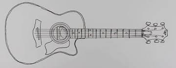
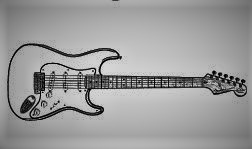
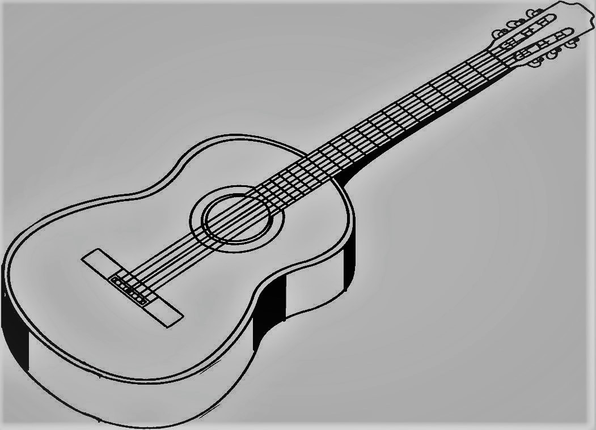
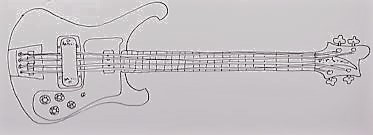
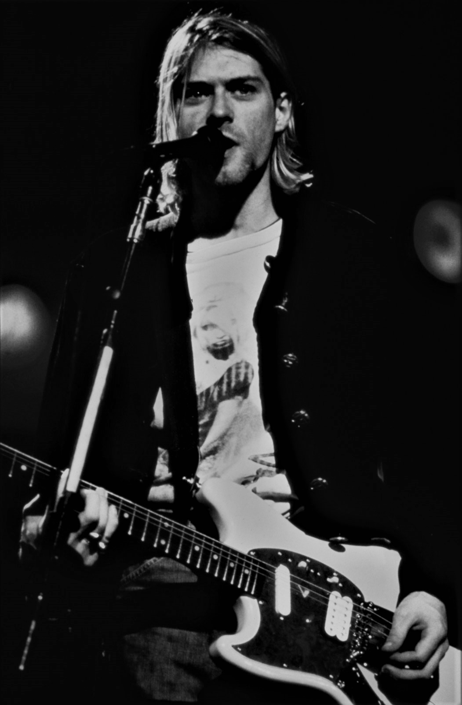

Акустична гітара — струнний щипковий музичний інструмент (у більшості різновидів з шістьма струнами) з сімейства гітар, звучання якого здійснюється завдяки коливання струн, яке посилюється за рахунок резонування порожнистого корпусу. Сучасні акустичні гітари можуть мати вбудовані звукознімачі: магнітні або п'єзоелектричні, з еквалайзером і регулятором гучності. У більш вузькому понятті — окремий клас гітари з металевими струнами і корпусами типу Дредноут, Фолк і Джамбо.
Акустична гітара є основним інструментом таких жанрів, як авторська пісня, фолк, займає важливе місце в циганській і кубинській народній музиці, рок-музиці, блюзі тощо.
Назва «Акустична» означає спосіб звукопідсилення резонуючим корпусом інструменту, без використання електрики.

Електрогітара — електричний музичний інструмент, різновид гітари з електричними звукознімачами, що перетворюють коливання металевих струн на коливання електричного струму. Сигнал зі звукознімачів може бути оброблений для отримання різних звукових ефектів та підсилений для відтворення через динаміки. Слово «електрогітара» виникло від словосполучення «електрична гітара».
На початку XX століття музиканти, які грали блюз, соул або кантрі, могли обійтися звичайними акустичними гітарами. Але вже у 1930-х роках джазові гітаристи відчули необхідність посилити звучання своїх інструментів. Історія електрогітари відносить нас до 1930 року, коли після звільнення з національної компанії струнних інструментів (National String Instrument Company) Джордж Бішамп (George Beauchamp) почав роботу з пошуку нових методів збільшення гучності струнних інструментів.
Популярним рішенням такої проблеми було наступне: провідник, що коливається в полі, яке створюється одним або декількома постійними магнітами, виробляє зміну в магнітному полі, яке у свою чергу виробляє змінний струм у дроті намотаному навколо цих магнітів. Сила електричного струму, пропорційна величині коливань провідника в магнітному полі. Такий самий принцип лежить в основі електромоторів, генераторів, голок фонографа і акустичних динаміків.

Класична (іспанська, шестиструнна) гітара — основний представник сімейства гітар, щипковий струнний музичний інструмент басового, тенорового і сопранового регістрів. У сучасному вигляді існує з другої половини XVIII століття, використовується як акомпанувальний, сольний і ансамблевий інструмент. Гітара володіє великими художньо-виконавськими можливостями і широким розмаїттям тембрів.
Класична гітара має шість струн, основний лад яких -e1, h, g, d, A, E (мі другої октави, сі, соль, ре першої октави, ля, мі малої октави). Багато музикантів експериментували з додаванням струн (десятиструнна гітара Фердінандо Каруллі і Рене Лакота, п'ятнадцятиструнна гітара Василя Лебедєва, дев'ятиструнна, ГРАН -гітара та ін), однак такі інструменти широкого поширення не отримали.

Бас-гітара (або просто бас) - струнно-щипковий музичний інструмент, який використовується для гри в басовому діапазоні. На бас-гітарі грають переважно пальцями, або медіатором.
Електрична бас-гітара як зовнішнім виглядом, так і конструктивно схожа на електрогітару (відповідно, акустична бас-гітара схожа на акустичну гітару), але має більш масивний корпус і гриф, а також більшу мензуру. Зазвичай на бас-гітарі використовують 4 струни, але існують також бас-гітари з більшою кількістю струн. 4-струнна бас-гітара налаштовується по квартах від мі-контроктави, в унісон з контрабасом, і на одну октаву нижче від 4 нижніх струн електрогітари. Як у випадку з електрогітарою, для електричної бас-гітари потрібне підключення до підсилювача для гри.
Починаючи зі своєї появи в 1950-х роках, бас-гітара практично повністю замінила контрабас в поп-музиці як інструмент ритічної групи. Крім цього, бас-гітара стала важливим елементом більшості сучасних музичних жанрів, причому в кожному з них може бути різна техніка виконання, лад і кількість струн.

Джеймз Маршалл «Джимі» Гендрікс (англ. James Marshall "Jimi" Hendrix МФА: Джимі Хендрикс; при народженні Джонні Аллен Гендрікс (англ. Johnny Allen Hendrix); 27 листопада 1942, Сієтл, Вашингтон — 18 вересня 1970, Лондон, Англія) — американський гітарист, співак і композитор, творчість якого пов'язана з такими напрямками, як-от есід-рок, блюз-рок та джаз-рок. За версією журналу Rolling Stone, Гендрікс був визнаний найкращим гітаристом світу.
Широко визнаний як один із найбільш сміливих і винахідливих віртуозів в історії рок-музики[джерело?], Джимі став піонером електрогітари, відкривши в ній нескінченне джерело можливостей нового звучання — зокрема це використання зворотного зв'язку, налаштованого на максимальну потужність підсилювачів, застосування ланцюгів гітарних ефектів. Іноді також грав на неналаштованих гітарах, досягаючи характерного дещо «фальшивого» звучання, навмисний фальш властивий був і у його вокалу.
Гендрікс починав кар'єру у 1960-х роках як студійний музикант, нерідко також грав у клубах. У 1966 його почув басист Чес Чендлер (Chas Chandler) і умовив його переїхати до Лондону для сумісної роботи. З 1966 він створив тріо, що отримало назву The Jimi Hendrix Experience, з яким записав три студійні альбоми. Перший альбом Гендрікса Are You Experienced?, виданий у 1967 році приніс йому світову славу, а такі композиції як Purple Haze, Foxy Lady, Hey Joe[en], Are You Experienced? та The Wind Cries Mary[en] стали стандартами рок-музики. Протягом наступних трьох років Гендрікс видав ще два альбоми — Axis — Bold as Love i Electric Ladyland, які містять такі хіти, як «Little Wing», «Voodoo Child», «All Along the Watchtower» (кавер пісні Боба Ділана) і «Gypsy Eyes».

Бі Бі Кінг (або Б. Б. Кінг, англ. B.B. King, справжнє ім'я — Riley B. King, укр. Райлі Бі Кінг, 16 вересня 1925, Ітта-Бена[en] — 14 травня 2015, Лас-Вегас) — американський блюзовий гітарист і вокаліст. Його композиції характеризує витончений стиль гітарного соло, заснований на плавному підтяганні (англ. string bending) і блискучому вібрато. Стиль, який вплинув практично на кожного послідовника «електрогітарного блюзу». Кінг поєднував такі різновиди блюзу, як мемфіський, сучасний електричний та соул-блюз.
Ім'я Бі Бі Кінга вписано до Зали слави блюзу та Зали слави рок-н-ролу, а також до списку 100 найкращих гітаристів всіх часів за версією журналу Rolling Stone.
Бі Бі Кінг також знаний тим, що до 70-річного віку щороку виступав на 250—300 концертах.
Протягом кар'єри Бі Бі Кінг зумів розвинути один з найбільших впізнаваних гітарних стилів, запозичивши деякі прийоми у таких гітаристів, як Блайнд Лемон Джефферсон та Ті-Боун Вокер.

Кіт Річардс (англ. Keith Richards, 18 грудня 1943) — англійський гітарист і поет, разом з Міком Джаґґером становили основу гурту The Rolling Stones.
Кіт віддавав перевагу акустичній гітарі, аргументуючи свою прихильність таким чином:
«Кожен гітарист повинен грати на акустичній гітарі вдома. Неважливо, що ви граєте, якщо ви не підтримуєте на високому рівні вашу акустичну гру, ви ніколи не зможете використати весь потенціал електрогітари, тому що ви втрачаєте контакт».
Окрім The Rolling Stones, Річардс писав гітарні партії для Макса Ромео, U2, Нони Хендрикс, Арети Франклін та інших. В 1968 Кіт Річардс був учасником гурту The Dirty Mac разом з Джоном Ленноном, Еріком Клептоном та Мітчем Мітчеллом, проте існування цього гурту обмежилося лише одним виступом.
Кіт Річардс зібрав колекцію з понад 3000 гітар, проте на більшості з них він ніколи не грає. Кіт Річардс посідає десяту сходинку у Списку 100 найкращих гітаристів усіх часів за версією журналу Rolling Stone.

Курт До́нальд Кобе́йн (англ. Kurt Donald Cobain; нар. 20 лютого 1967, Абердин, Вашингтон — пом. 4 квітня 1994, Сієтл) — американський музикант і композитор, фронтмен гурту Nirvana
В 1985 році Курт організував групу, названу Fecal Matter; складалася вона з бас-гітариста Дейла Кровера, барабанщика Грега Хокансон і власне Кобейна — вокаліста і гітариста. Приблизно через рік Fecal Matter розпалися, так і не випустивши жодного диска; після цього Курт почав поширювати серед знайомих демозапис Fecal Matter — йому хотілося створити нову групу. Одна з касет дісталася Кристу Новоселичу, одному другу Курта. На деякий час він, здавалося, забув про неї, але через кілька місяців несподівано завів з Кобейном розмову про те, що їм варто було б організувати рок-групу (він прослухав запис, і матеріал йому сподобався). Новостворена команда (в якій незабаром з'явився третій учасник — ударник Чед Ченнінг) змінила кілька назв: «Skid Row», «Ted Ed Fred», «Bliss», «Pen Cap Chew», — проте в підсумку було вибрано «Nirvana». «Я шукав назву, яка була б гарною або приємною», — пояснював Кобейн. В 1988 році вийшов перший сингл групи — « Love Buzz / Big Cheese», а вже в наступному році з'явився в продажу дебютний альбом Nirvana — Bleach .
В 1991 році був виданий другий альбом Nirvana — Nevermind , який став для групи несподіваним проривом в мейнстрім. Сингл «Smells Like Teen Spirit», на загальний подив, став хітом на MTV (хоча спочатку передбачалося, що провідним синглом з платівки стане « Lithium»). Раптовий успіх Nirvana на міжнародній сцені привернув увагу публіки до сіетлського гранж-гурту і породив хвилю наслідувачів. ЗМІ називали Nirvana «флагманом покоління Х», а самого Кобейна — «голосом покоління». Сам Кобейн відчував дискомфорт від популярності, що раптово звалилася на нього: сам він бачив себе перш за все представником незалежної рок-сцени, і його дратувало те, що він став кумиром широких мас. Наступний альбом групи, In Utero , він навмисно зробив набагато важчим і похмурим, щоб відлякати широкого слухача і проголосити повернення Nirvana до її «незалежного» коріння (продюсером альбому став Стів Альбіні, лідер нойз-рок — гурту Big Black). Проте, альбом, хоч і не став таким же успішним, як Nevermind , все ж користувався популярністю у слухачів і досяг високих місць в чартах.
Незважаючи на те, що Nirvana була «аполітичною» групою і не приділяла великого значення соціальним питанням, як це робили багато панк — ансамблів, Кобейн, проте, користувався своєю популярністю, щоб донести до публіки свої ідеї. Він був активним захисником прав жінок і секс-меншин і підтримував прочойс (при тому, що особисто він захоплювався материнством і жінками-матерями), внаслідок чого неодноразово отримував погрози на свою адресу від войовничих. В буклет до збірки Incesticide були включені слова: "Якщо хто-небудь з вас через що-небудь ненавидить гомосексуалістів, людей іншої раси або жінок, будь ласка, зробіть для нас ласку — йдіть нафіг і залиште нас в спокої! Чи не приходите на наші концерти і не купуйте наші альбоми ". На одному з концертів Кобейн, побачивши, що в перших рядах залу для глядачів якийсь чоловік пристає до жінки, кинув гітару, підійшов до місця події і покликав туди охорону, вказавши порушникові порядку на двері.
8 квітня 1994 електрик по імені Гері Сміт (Gary Smith) прибув в будинок Кобейна, що розташовувався за адресою 171 Lake Washington Blvd East в Сіетлі, о 8 годині 30 хвилин для установки системи безпеки. Сміт кілька разів подзвонив в будинок, однак двері ніхто не відчинив. Потім він помітив припаркований в гаражі, що знаходився поруч з будинком, автомобіль Volvo, і вирішив, що господарі будинку, можливо, в гаражі або оранжереї, яка розташовувалася прямо над гаражем. Сміт перевірив гараж, потім піднявся по сходах до оранжереї. Через скляні двері оранжереї Сміт зауважив тіло і припустив, що хтось спить, проте, придивившись, він побачив кров у ліве вухо і рушницю, що лежить поперек тіла. Так було виявлено тіло Курта Кобейна. О 8 годині 45 хвилин Гері Сміт подзвонив в поліцію і місцеву радіостанцію. Курт залишив передсмертну записку, написану червоною ручкою.
Протокол огляду місця події був складений формально, без поглибленого аналізу деталей. За однією з версій слідства, Кобейн ввів собі дозу героїну, несумісну з життям, і вистрілив собі в голову з рушниці. Також криміналіст и прийшли до висновку, що Курт помер 4 квітня і його мертве тіло пролежало в будинку три дні. Існує припущення і про навмисне вбивство Курта. У список підозрюваних неофіційно потрапила Кортні Лав.
Після кремації частина праху Кобейна була розвіяна над річкою Уишка в його рідному Абердині, а частина залишила собі Кортні. Неофіційним місцем поклоніння пам'яті співака є меморіальна лава в парку Віретта (Viretta Park), розташованому недалеко від останнього будинку Кобейна в Сіетлі. Оранжерея над гаражем, де було знайдено тіло Курта, знесена в 1997 році, а сам будинок проданий.